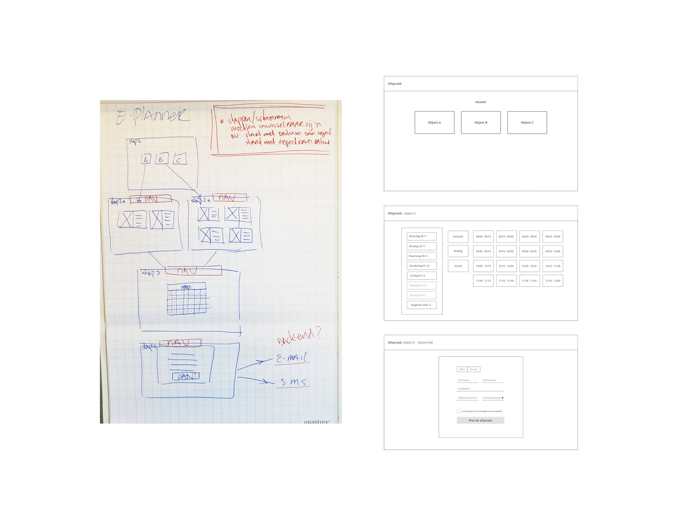

Pieter Goossens
Digital designer
Het ontwikkelen van een breed inzetbare evenementplanner waarmee een bedrijf haar klanten zelf kan laten plannen op de website of op een ander digitaal kanaal. Dit kan bijvoorbeeld een wintercheck of de introductie van een automodel zijn.
Het agenda element moest opnieuw ontworpen worden omdat een standaard ‘date picker’ niet voldeed. De data liet zien dat evenementen zich voornamelijk af spelen in korte periodes van 1 à 2 weken.
De applicatie moet kunnen voorzien in een aantal complexe gevallen zoals: alleen tijdselectie, alleen dagselectie, 1-weekselectie en multi-weekselectie. Onderlinge afhankelijkheid van de schermen voor en na de datum en tijd selectie zodat de applicatie dynamisch ingezet kan worden. Bijvoorbeeld starten met vestigingskeuze en daarna datumkeuze of andersom
De applicatie zal in de meeste gevallen ‘embedded’ in de website van de opdrachtgever opereren. Hier moet met het design rekening gehouden worden zodat het gemakkelijk aangepast kan worden in de huisstijl van de opdrachtgever.
Met het gehele team zijn er schetsen en wireframes geproduceerd die we kunnen gebruiken om onze eerste ideeën te testen bij verschillende stakeholders. Ook dienen deze eerste ideeën als referentiepunt in het latere ontwikkeltraject.
Consumenten.
De evenement planner kan worden ingezet (’embedded’) op een actiesite of
in de website van de opdrachtgever zoals: Gomes Mercedes-Benz en Stern
auto.
De onderstaande agenda is flexibel ontworpen zodat aan de meest voorkomende plan- scenario’s kan worden voldaan, zoals:
Het basis framework heeft een rustig en neutraal design zodat het goed past binnen de bestaande huisstijlen van de wisselende opdrachtgevers. Er zijn kleuraccenten op de elementen en CTA’s aangebracht die door CSS kunnen worden overschreven naar de gewenste huisstijl van de opdrachtgever.